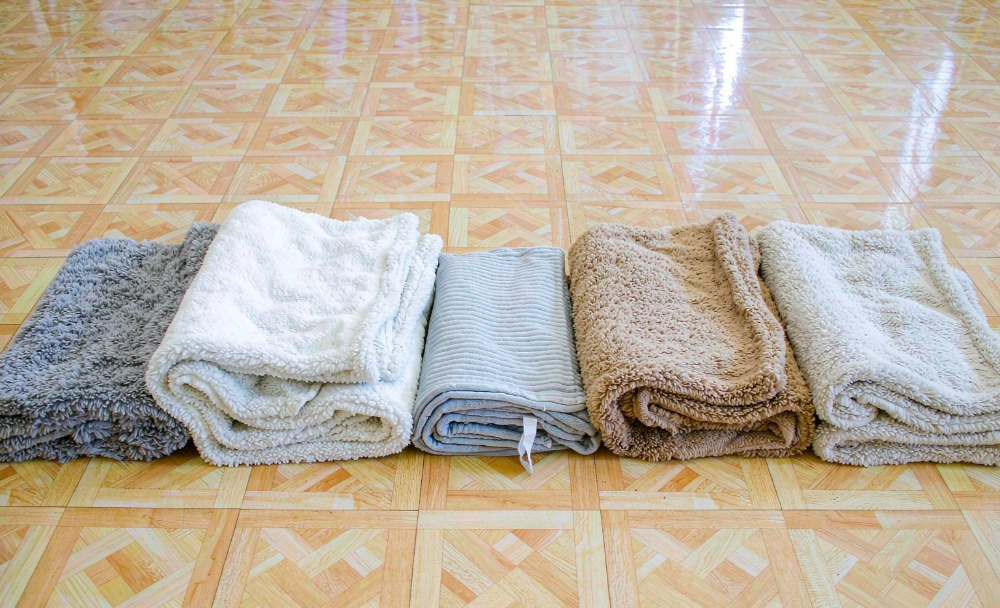

Short answer: after ordering and washing blankets from five different sellers, we found that fabric weight matters more than price. The two mid-range sellers beat the budget option on every measure that counts: print sharpness, softness after washing, and edge stitching. We recommend spending a little more for sherpa backing and printed labels rather than sewn-on patches if you want a blanket that lasts.

How We Ran the Comparison
We uploaded the identical six-photo layout to five sellers, two budget marketplace listings, Personalization Mall, Shutterfly's premium blanket line, and a discount flash-sale site, and ordered the same 50 by 60 inch size from each, and washed every blanket ten times on cold, gentle cycle. We scored each on print sharpness out of the box, softness before and after washing, edge stitching, shipping speed, and how honestly the product photos matched what arrived.
Five Sellers, Side by Side
| Seller Profile | Fabric | Print Quality | Price Range | Verdict |
|---|---|---|---|---|
| Budget marketplace shop | Thin flannel | Soft edges on small faces | Lowest | Fine for a gag gift |
| Mid-range marketplace shop | Medium fleece | Good overall, minor banding | Low to mid | Solid value |
| Personalization Mall | Fleece with sherpa backing | Sharp, accurate colors | Mid | Our top pick |
| Shutterfly premium line | Heavy fleece, sherpa backing | Excellent, gallery level | High | Best for milestone gifts |
| Discount flash-sale site | Very thin flannel | Noticeable color shift | Lowest | Skip |
What Surprised Us
The biggest surprise was how little correlation there was between marketing and reality. The flash-sale site had the most polished product photos and the worst actual blanket, with a color shift that made skin tones noticeably orange. Meanwhile Personalization Mall, with the least flashy presentation of the group, shipped the best all-round product of the batch.
The Wash Test
Ten washes later, the rankings held almost exactly. The budget flannels pilled along the fold lines and one showed slight print dulling. Both sherpa-backed blankets washed beautifully but took a full day to air dry due to the backing thickness, which is worth knowing before you promise a gift for a specific date. None of the five shed color in the wash, which reassured us that modern sublimation printing is consistent across the market.
Which Seller Should You Pick?
If the blanket is a milestone gift, Shutterfly's premium line was worth every dollar, and the print quality genuinely looked gallery grade. For everything else, Personalization Mall hits the sweet spot. If you are weighing the gift itself rather than the seller, our first-person photo blanket review covers what the ordering and gifting experience actually feels like.
Frequently Asked Questions
What is the best fabric for a photo blanket?
Fleece with a sherpa backing offered the best balance of print surface, softness, and durability in our testing. Thin flannel prints acceptably but pills along fold lines within months.
Are expensive custom blankets worth the price?
For milestone gifts, yes. The Shutterfly premium blanket in our test delivered visibly sharper prints and better stitching. For casual gifts, mid-range sellers deliver most of the quality at a lower price.
How can I judge print quality before ordering?
Look for real customer photos rather than renders, check whether the seller publishes fabric weight, and order early enough to allow a reprint if the product disappoints.
What size blanket should I buy?
The 50 by 60 inch size works as a generous lap blanket, and the 60 by 80 inch size suits adults who like full coverage. Larger sizes also make each photo bigger and clearer.